生成时间：2026-05-12T13:21:25+08:00
今日保留论文数：0
补充推荐论文数：3
今日结论
今天有论文更新，但没有论文通过常规推荐阈值。以下 3 篇是近期/较早未读论文中的补充推荐，不是今日每日论文。
补充推荐：近期/较早未读论文（非今日论文）
1. High-speed single-photoelectron detection for Cherenkov astronomy
- 来源：arXiv / astro-ph.IM
- 链接：https://arxiv.org/abs/2605.10411v1
- 作者：Luca Giangrande, Matthieu Heller, Teresa Montaruli
- 类型：补充推荐（近期/较早未读，非今日每日论文）
- 评分：novelty 8/10，importance 8/10，relevance 10/10，final 9.70/10
- 推荐理由：面向大气切伦科夫望远镜相机的SiPM+ASIC联合设计，实现纳秒响应、单光电子分辨和1到130 p.e.线性动态范围；对IACT/CTA类相机读出技术高度相关且可复用。
中文题目：用于切伦科夫天文学的高速单光电子探测
做了什么：这篇仪器论文面向成像大气切伦科夫望远镜相机，提出并测试了一套共同设计的硅光电倍增管 SiPM 传感器与前端 ASIC 读出方案。核心问题是：在纳秒级切伦科夫闪光中，能否同时获得单光电子分辨率、低噪声、足够动态范围和可扩展的大面积相机架构。作者使用 Hamamatsu 定制六边形 SiPM，集成光学滤波并做四分割像素，再用 65 nm CMOS 的第二版 FANSIC ASIC 进行 8 通道高速读出和片上模拟求和。测试显示系统可清晰分离单光电子峰，脉冲响应 FWHM 小于 4 ns、上升时间 1.7 ns，1 到 130 光电子范围内线性，最多分辨出 55 个光电子峰。结论是这种传感器—电子学一体化设计已经接近或满足下一代切伦科夫相机对速度、分辨率和模块化扩展的关键要求。
为什么重要：切伦科夫望远镜相机的物理极限很大程度上由前端光探测与读出决定：夜天光背景、电子噪声、单光电子标定、纳秒时间结构和大动态范围会一起影响伽马射线阈值、能量重建和背景抑制。传统 PMT 正在被 SiPM 替代，但 SiPM 的暗计数、串扰、电容负载和读出速度并不自动满足 IACT 需求。这项工作重要在于它不是只展示一个传感器或一个芯片，而是把像素几何、滤光、分割、电荷求和、功耗和时间响应作为同一个系统优化问题处理。
理论 / 观测 / 仪器方法价值：对仪器方法的价值主要有三点：第一，它给出了一套可量化的 SiPM+ASIC 性能基准，包括单光电子峰分离、增益、脉冲宽度、线性范围和功耗；第二，它展示了通过像素分割和片上模拟求和降低等效电容、保持高速响应的工程路线；第三，它为大面积 Cherenkov 相机模块提供可扩展设计思路，尤其适合需要高像素数、低功耗和稳定标定的下一代阵列。
为什么应该关注：如果你关心 CTA 及后续地面伽马射线阵列的低能阈、快速瞬变响应或相机标定，这类前端技术会直接进入最终科学灵敏度预算。更好的单光电子解析不仅是漂亮的实验室指标，它影响夜天光扣除、像素增益监控、图像清洗阈值和短脉冲时间梯度测量。仪器论文通常看似工程化，但这里的性能参数会传播到伽马射线源谱、形态和时间变率的系统误差中。
展开详细解读：文章讲解、背景、理论、重点章节、图表与相关工作
文章详细讲解
科学问题：成像大气切伦科夫望远镜探测的是大气簇射产生的几纳秒蓝紫光闪光。相机像素必须在很短时间内区分少量光电子信号与夜天光、暗噪声和电子噪声。PMT 技术成熟但体积、工作电压、量子效率和长期维护存在限制；SiPM 更紧凑、更耐强光、可低压工作，但单光电子分辨率、纳秒速度、大面积拼接和功耗需要系统级优化。
作者怎么做：论文报告了一种定制六边形 SiPM 传感器和 FANSIC ASIC 第二版原型。传感器由 Hamamatsu 开发，带集成光学滤波以压制不需要的波段，并采用四重像素分割，目的在于降低每个读出单元的电容和带宽压力。ASIC 用 65 nm 标准 CMOS 工艺制造，芯片面积为 3.5×3.5 mm²，提供 8 个通道，并在片上对若干子通道做模拟求和，每通道功耗约 24 mW。测试围绕单光电子谱、脉冲响应、线性动态范围和不同光强下的峰分离能力展开。
关键结果：系统获得了清晰的单光电子峰分离，报告增益为 2.7×10^{-12} V s，即以输出电压积分表示的每个光电子响应。脉冲冲激响应 FWHM 小于 4 ns，上升时间 1.7 ns，说明电子学没有把切伦科夫脉冲的纳秒结构严重展宽。线性响应覆盖 1 到 130 个光电子，并且通过改变光源强度可分辨 55 个不同光电子峰。这些指标共同说明该系统不只适合低光强标定，也可承受常规簇射图像中的较高光电子数。
局限和下一步：摘要层面看，结果主要来自实验室原型测试，还需要在完整相机模块、温度变化、夜天光背景、长期运行、通道间串扰、辐照或强光恢复等条件下验证。IACT 实际运行还要求触发逻辑、波形采样、增益稳定性和大规模生产一致性。下一步应是多像素模块集成、真实或模拟夜天光下的有效噪声测试，以及把这些电子学响应输入端到端 Monte Carlo，评估对能量阈值、角分辨率和伽马/强子分离的影响。
背景知识
研究对象是成像大气切伦科夫望远镜 IACT 的相机像素。高能伽马射线进入大气后产生电磁簇射，带电粒子以超光速于空气相速度运动并发出切伦科夫光。地面望远镜捕捉到的是持续几纳秒、空间上呈椭圆图像的微弱闪光。像素级探测器需要高光子探测效率、快时间响应、低噪声和稳定增益。
历史上，IACT 相机长期依赖光电倍增管 PMT。PMT 的优点是快、噪声低、增益高，缺点是高压、机械尺寸、磁场敏感性、量子效率有限，以及对强光较脆弱。SiPM 由许多 Geiger 模式 APD 微单元组成，能在低电压下获得高增益，光子探测效率高且易于紧凑封装，因此成为 CTA 小尺寸望远镜和多种下一代相机的重要候选。
为什么现在值得重看：一方面，天文需求正在向更低能阈、更大视场和更高像素数推进；另一方面，CMOS ASIC、SiPM 工艺和片上集成能力快速进步，使传感器和读出可以协同优化，而不只是把商用 SiPM 接到通用放大器上。夜天光背景、温度漂移和大通道数功耗过去常是 SiPM 相机的痛点，现在可以通过滤光、像素分割、模拟求和和低功耗 ASIC 重新平衡。
常见误区是把“单光电子分辨率”简单理解为只在暗室低速读出下看到光电子峰。对 Cherenkov 相机来说，真正困难的是在纳秒时间窗、较大电容负载、可扩展通道数和低功耗条件下仍保持峰分离与线性。此外，SiPM 高 PDE 并不自动等于更高天文灵敏度，因为夜天光、光学滤波、串扰、后脉冲和读出带宽都会改变有效信噪比。
基础理论 / 方法脉络
核心物理图像是光电子计数与快脉冲测量。一个 Cherenkov 光脉冲到达像素后，在 SiPM 中触发若干微单元雪崩；若每个微单元响应近似相同，总输出电荷或电压积分与触发微单元数近似成正比。在低光强下，输出积分谱会出现按整数光电子数分布的峰，峰间距给出增益，峰宽反映电子噪声、增益涨落、串扰和后脉冲。
SiPM 的一个关键工程量是电容。像素面积越大，结电容和互连电容越大，前端放大器要在同样噪声下实现更高带宽就更困难。把像素分割成若干子通道，再在 ASIC 片上模拟求和，可以减少每个前端看到的电容负载，同时保持几何像素的总收光面积。这是论文中四重分割与片上求和的主要动机。
观测方法上，IACT 不只关心总光电子数，还关心波形时间结构。簇射图像中不同像素的到达时间梯度能帮助重建方向、撞击参数和背景判别。如果前端脉冲响应太慢，几个纳秒的原始结构会被卷积展宽，导致图像清洗和时间参数失真。因此 FWHM、上升时间、线性范围和恢复时间与单光电子分辨率同等重要。
系统误差主要来自温度依赖增益、击穿电压漂移、光学滤波透过率、夜天光诱导的基线涨落、微单元饱和、光学串扰、后脉冲和通道间响应不均匀。实验室中得到的光电子峰分离必须进一步映射到实际观测下的等效噪声光电子数和触发效率。
公式与推导
从光子到光电子，若入射到像素的光子数为 \(N_\gamma\)，光子探测效率为 PDE，光学透过率为 \(T\)，则平均光电子数可写为
这里 \(\mu_{\rm pe}\) 是期望触发的初级光电子数，\(T\) 包含镜面、窗口和集成滤光片透过率，PDE 包含量子效率和 Geiger 触发概率。
低光强下，若暂不考虑串扰和后脉冲，光电子数服从泊松分布：
输出电压积分 \(A=\int V(t)dt\) 的谱可看成多个光电子峰的叠加，峰中心约为
其中 \(A_0\) 是基线积分，\(G\) 是以 \({\rm V\,s}\) 表示的单光电子增益。论文报告的 \(G\simeq2.7\times10^{-12}\,{\rm V\,s}\) 就是相邻峰中心间距。
前端时间响应可以用探测器本征电流 \(i_{\rm SiPM}(t)\) 与电子学冲激响应 \(h(t)\) 的卷积表示：
其中 \(R_f\) 表示等效跨阻或电荷到电压转换因子，\(V_{\rm noise}\) 包括电子噪声和背景噪声。若 \(h(t)\) 的宽度接近或大于 Cherenkov 脉冲宽度，观测波形就会被显著展宽。
线性范围常用相对偏差表示：
当 \(|\delta_{\rm lin}|\) 在误差内接近零时，可认为输出对光电子数线性。论文给出的 1–130 光电子线性范围说明在典型小到中等像素信号下，电荷估计不会被前端饱和严重扭曲。
模型拟合 / 应用方法
这类仪器测试的核心拟合对象通常是电压积分谱和时间波形。单光电子谱可用多个高斯峰或带非高斯尾的峰函数拟合，峰间距给出增益，峰宽给出等效噪声和增益涨落，峰面积的相对比例可用于估计平均光强、串扰概率和后脉冲贡献。若引入串扰，光电子数分布不再是简单泊松，而需使用分支过程或经验修正。
时间响应拟合通常从平均波形中提取上升时间、FWHM、衰减时间和积分窗口依赖。需要区分光源脉宽、触发抖动、示波器/采样器带宽与传感器—ASIC 本身响应。线性拟合则把不同光强下的输出积分与参考光强或期望光电子数比较，关注高光强端残差是否系统性偏低，这通常提示微单元饱和、前端压摆率限制或动态范围不足。
参数退化包括增益与光强标定退化、串扰与真实光电子数退化、电子噪声与峰宽退化、滤光片透过率与 PDE 退化。实际应用到 IACT 时，还要把实验室标定参数作为相机校准数据库输入，包括通道增益、暗计数率、温度系数、脉冲模板和饱和修正曲线。残差图应重点看光电子峰中心是否等间距、峰宽是否随 n 按预期增长、线性残差是否随光强单调偏离。
重点章节 / 结果段落怎么读
-
需求与设计动机：读者应先看作者如何定义 Cherenkov 相机对单光电子分辨率、纳秒响应、功耗和动态范围的要求。这部分决定后面指标是否真的与天文应用相关。
-
传感器设计：重点看六边形几何、集成滤光片和四重分割的描述。需要判断这些设计是为提高填充因子、降低夜天光，还是为降低电容和改善带宽。
-
FANSIC ASIC 架构：重点读 65 nm CMOS、8 通道、片上模拟求和、功耗和前端拓扑。这里关系到系统能否扩展到大面积相机，而不是停留在单通道实验室演示。
-
实验室表征：单光电子谱、冲激响应、线性范围和峰分辨实验是论文的结果核心。专业读者应检查测试光源、积分窗口、温度、偏置电压和误差定义。
-
面向相机模块的讨论：最后应看作者如何把原型结果外推到 IACT 模块，是否讨论夜天光、批量一致性、热设计和系统集成。
建议重点查看的图表
-
传感器与 ASIC 布局图：看六边形像素、四分割子像素和读出通道如何对应，确认几何设计是否适合无缝铺满相机焦平面。
-
单光电子积分谱：看相邻峰是否清晰分离、峰宽是否随光强变化、基线峰与 1 pe 峰之间的分离度是否足够。
-
平均脉冲波形或冲激响应图：看上升沿、FWHM、尾部恢复和可能的振铃；尾部过长会影响高夜天光背景下的基线。
-
线性响应图：横轴通常是期望光电子数或光源强度，纵轴是输出积分；重点看 1–130 pe 的残差，而不只是主图的直线。
-
多光强下峰分辨图：看作者声称 55 个峰可分辨时，峰间距是否仍稳定，峰宽是否导致相邻峰混叠。
-
功耗或通道性能汇总表：看每通道 24 mW 与噪声、带宽的折中，评估大相机热负载是否可接受。
关键图表逐图导读
图 1：通常应是系统架构或照片。横纵轴可能不是数据轴，而是展示 SiPM 像素、四个子通道、ASIC 输入和模拟求和路径。读图重点是信号链是否短、寄生电容是否可控，以及六边形像素是否服务于相机焦平面铺排。陷阱是只看芯片面积小，而忽略封装、连接和散热在真实模块中可能放大问题。
图 2：单光电子谱。横轴应为电压积分或 ADC 积分值，纵轴为事件数。数据点/直方图若出现等间距峰，模型线可能是多高斯叠加。主要结论是峰间距给出增益、峰宽给出噪声。读图陷阱是低光强下峰清楚不代表高背景运行也清楚，需看积分窗口和暗计数条件。
图 3：时间响应。横轴为时间 ns，纵轴为归一化电压或电流响应。应检查 1.7 ns 上升时间和小于 4 ns FWHM 是否来自去卷积后结果还是直接测量结果。尾部、过冲和振铃对触发和波形积分很关键，不能只看 FWHM。
图 4：线性动态范围。横轴为注入或估计光电子数，纵轴为输出积分，模型线为线性拟合。关键看残差面板：高光强端若出现系统性负残差，可能是微单元饱和或 ASIC 动态范围限制。论文声称 1–130 pe 线性，应检查误差条定义。
图 5：峰数随光强变化或高光电子数峰分离。横轴仍多为积分值，纵轴为计数。读者应看 55 个峰的可分辨性是否靠低噪声和稳定增益实现，还是依赖很窄的实验条件。
论文原图 / 可嵌入图片
Fig03
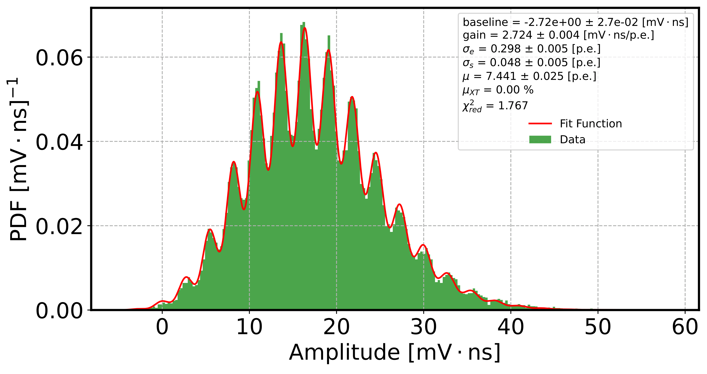
图注：Measured multi‑photoelectron distribution acquired at a fixed light intensity. The distribution is derived from the integral of the output pulse over a fixed window of 4~ns. The data fit employs a generalized Poisson $pdf$ and its parameters are reported in the legend.
对应解读：对应“建议重点查看的图表”第2项单光电子积分谱、第5项多光强/多光电子峰分辨，以及“关键图表逐图导读”中的图2和模型拟合段落。
入选理由：该图直接给出由4 ns固定积分窗口得到的多光电子积分分布，并使用广义泊松pdf拟合，是验证单光电子峰间距、增益、峰宽、噪声和串扰/光电子数分布模型的核心证据。相比其他候选图，它最直接支撑摘要中“清晰单光电子峰分离”和增益测量的结论。
来源与置信度：\(arxiv_source\)；high；\(arxiv_source\) / tns.tex:figure[3]
Fig02
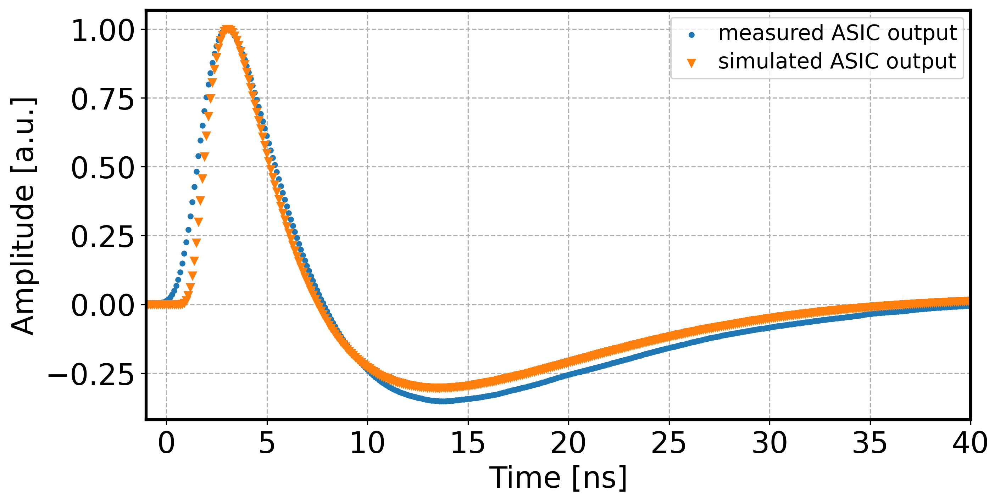
图注：Comparison of the measured and simulated output pulse. The measured waveform represents an average over 10,000 acquisitions. The simulation employs the Corsi model parameterized for the custom sensor.
对应解读：对应“建议重点查看的图表”第3项平均脉冲波形或冲激响应图，以及“关键图表逐图导读”中的图3和时间响应拟合段落。
入选理由：该图比较实测平均输出脉冲与基于定制传感器参数的Corsi模型模拟波形，可直接检查上升沿、FWHM、尾部恢复和模型是否再现实测脉冲形状，是判断系统能否保持切伦科夫纳秒时间结构的关键图。
来源与置信度：\(arxiv_source\)；high；\(arxiv_source\) / tns.tex:figure[2]
Fig04
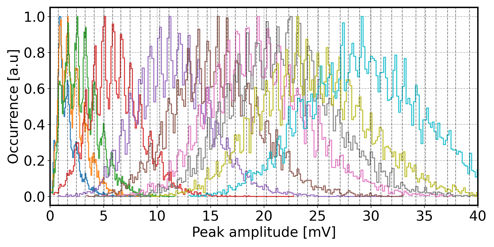
图注：Overlaid amplitude histograms for different source intensities, each derived from 10,000 acquisitions.
对应解读：对应“建议重点查看的图表”第5项多光强下峰分辨图，并部分对应第4项线性响应检查。
入选理由：该图叠加展示不同光源强度下的幅度直方图，每组来自10000次采集，适合观察随光强增加时峰结构是否仍可区分、峰间距是否稳定以及高光强下是否出现混叠。虽然不是明确的线性残差图，但能支撑论文关于多光强峰分辨能力的主要说法。
来源与置信度：\(arxiv_source\)；high；\(arxiv_source\) / tns.tex:figure[4]
Fig01

图注：Optical micrograph of the ASIC comprising eight analog channels and one common digital configuration block.
对应解读：对应“建议重点查看的图表”第1项传感器与ASIC布局图，以及“关键图表逐图导读”中的图1系统架构/芯片展示。
入选理由：该图是ASIC光学显微照片，展示8个模拟通道和公共数字配置模块，可用于理解前端读出通道规模和芯片实现。它没有直接显示六边形SiPM像素或四分割传感器几何，因此与日报中传感器铺排和子像素对应关系的解读只部分匹配，科学证据优先级低于波形和积分谱图。
来源与置信度：\(arxiv_source\)；high；\(arxiv_source\) / tns.tex:figure[1]
强相关工作
这项工作应放在 CTA 和后 CTA 时代 SiPM 相机研发的脉络中比较。相似方向包括 FACT 望远镜最早大规模使用 SiPM、CTA 小尺寸望远镜相机、SST-1M 和 ASTRI 等项目中的 SiPM 读出，以及 TARGET、CITIROC、NECTAr 等 Cherenkov 相机前端 ASIC。检索关键词可用“SiPM Cherenkov telescope camera ASIC single photoelectron CTA FANSIC”。
基础理论与仪器背景可从 IACT 图像形成、Hillas 参数、切伦科夫相机标定和 SiPM 噪声模型入手。相反或张力观点主要不是物理模型冲突，而是工程折中：SiPM 的高 PDE 与高夜天光响应之间的折中、单光电子分辨率与高带宽/低功耗之间的折中、像素分割带来的性能提升与封装复杂度之间的折中。检索关键词可用“night sky background SiPM IACT optical crosstalk afterpulsing dynamic range”。
相似工作：
- https://arxiv.org/abs/1304.1710
- https://arxiv.org/abs/1709.04233
- https://arxiv.org/abs/1508.06453
基础理论 / 方法工作：
- https://arxiv.org/abs/1008.3703
- https://arxiv.org/abs/1709.07997
相反观点 / 张力线索：
（未提供）
2. Can magnetic reconnection power neutrino emission from AGN coronae?
- 来源：arXiv / astro-ph.HE
- 链接：https://arxiv.org/abs/2605.10559v1
- 作者：Omar French, Gregory R. Werner, Mitchell C. Begelman
- 类型：补充推荐（近期/较早未读，非今日每日论文）
- 评分：novelty 8/10，importance 8/10，relevance 9/10，final 9.35/10
- 推荐理由：针对NGC 1068等AGN日冕中IceCube中微子起源，提出小尺度磁重联可将质子加速到数十PeV并与TeV谱形相容；对高能中微子源和AGN日冕非热粒子物理高度相关。
中文题目：磁重联能否驱动 AGN 日冕中的中微子辐射？
做了什么：这篇理论论文研究超大质量黑洞活动星系核日冕中的小尺度磁重联，是否能为 IceCube 观测到的高能中微子提供非热质子，NGC 1068 被用作测试案例。作者把日冕建模为强湍流、低 β、无碰撞氢等离子体，并用中微子光度、X 射线光度和 Thomson 光深约束日冕尺度、磁场、质子密度和辐射能量密度，把参数空间压缩到一族模型。结果显示质子磁化参数 σ_p 约为 0.3，处于跨相对论区间；在这一条件下，质子可通过反复遭遇间歇性重联电流片加速到几十 PeV，随后受光介子冷却限制。采用受 PIC 强湍流模拟启发的非热质子谱后，模型可给出与 NGC 1068 TeV 能段中微子形状大体一致的结果，而且不需要专门调节质子谱斜率来拟合。
为什么重要：NGC 1068 是 IceCube 最有说服力的非耀变体 AGN 中微子候选源之一，但它的中微子来自哪里仍不清楚。若源区在黑洞附近 X 射线日冕而非相对论喷流，那么粒子加速机制、辐射场、γ 射线吸收和多信使约束都与传统 blazar 图像不同。本文的重要性在于它把“日冕能否加速 PeV 质子”具体化为磁化参数、重联加速和光介子损失的定量问题，而不是只做能量预算。
理论 / 观测 / 仪器方法价值：理论价值在于连接了三类通常分开的研究：AGN X 射线日冕模型、无碰撞磁重联/PIC 粒子加速结果，以及 IceCube 中微子谱。方法上，作者用可观测的 X 射线光度、Thomson 光深和中微子光度压缩日冕参数空间，给出一个可检验的跨相对论低 β 等离子体场景。对观测而言，它提示中微子亮 AGN 未必需要强 γ 射线逃逸，因为日冕内的高辐射密度会同时促进 pγ 产中微子并吸收高能 γ 射线。
为什么应该关注：如果你关心高能中微子源、AGN 日冕物理或黑洞吸积盘附近的非热粒子，这篇文章值得看，因为它讨论的是一个越来越重要的替代图像：普通或 Seyfert 型 AGN 的紧凑日冕可能是隐藏宇宙线加速器。它还把 PIC 模拟中的重联加速结果推向可观测天体系统，是判断“微观等离子体过程能否支撑宏观多信使信号”的一个清晰案例。
展开详细解读：文章讲解、背景、理论、重点章节、图表与相关工作
文章详细讲解
科学问题：IceCube 对 NGC 1068 的中微子信号提示某些无线电不强、非 blazar AGN 也可能产生 TeV–PeV 中微子。由于 NGC 1068 的 GeV–TeV γ 射线没有像透明喷流源那样强烈对应，中微子源区很可能是高辐射密度、对 γ 射线不透明的隐藏区域。黑洞附近 X 射线日冕天然具备高光子密度和强磁场，但关键问题是：日冕是否能把质子加速到足够高能，并在冷却前产生 IceCube 能段中微子。
作者怎么做：他们把 SMBH 日冕视作强湍流、低等离子体 β、无碰撞氢等离子体，用特征半径 \(r_co\)、磁场 B、质子数密度 \(n_p\) 和辐射能量密度 \(u_rad\) 描述。X 射线光度提供辐射能量密度尺度，Thomson 光深约束 \(n_p\) \(r_co\)，观测中微子光度约束非热质子功率和 pγ 效率。这样原本多维的日冕参数被化简为一参数族。随后他们估计质子磁化参数 σ_p，并讨论在 σ_p≈0.3 的跨相对论重联/湍流条件下，间歇性电流片如何为质子提供初始非热加速。
关键结果：在满足 NGC 1068 观测约束的模型族中，σ_p 自然落在约 0.3，而不是远小于 1 的非相对论区或远大于 1 的极端相对论区。这个区间对质子加速很有利：重联电场和湍流电流片可将超热质子推进到几十 PeV，直到 pγ 光介子损失变得主导。作者采用受 PIC 强湍流模拟启发的非热质子注入谱，允许谱指数独立指定，并发现预测的 TeV 中微子谱形与 NGC 1068 大体一致，不需要反向拟合一个任意谱斜率来强行匹配。
局限和下一步：该模型依赖日冕几何、辐射场谱、磁湍流间歇性和 PIC 结果外推。真实 AGN 日冕可能有电子—质子温度非平衡、对产生、层状结构、盘风遮蔽和广义相对论辐射转移效应。下一步需要把重联加速谱、粒子输运、γγ 吸收、电磁级联和 X 射线谱变率放进同一框架，并比较更多 Seyfert 星系而不只 NGC 1068。
背景知识
AGN 日冕是黑洞吸积盘内区附近产生硬 X 射线的紧凑热/非热电子等离子体区域。标准图像中，冷盘的 UV/软 X 射线光子被日冕热电子 Compton up-scattering 成幂律 X 射线谱。日冕的几何可能是灯柱、夹层、磁环或斑块状结构，磁场很可能在加热和能量输运中起核心作用。
中微子背景和点源搜索过去主要关注 blazar，因为喷流能把粒子加速到极高能并让 γ 射线逃逸。但 IceCube 对 NGC 1068 的结果改变了问题重心：一个近邻 Seyfert 2 星系、并非典型强喷流源，却显示出中微子过量。这促使人们认真考虑“隐藏源”模型，即中微子能逃逸，而伴随 γ 射线在源内被吸收或重处理。
历史问题在于 AGN 日冕是否只是电子热 Compton 化区域，还是也含有高能离子。若有强磁场和低 β 等离子体，磁重联可以同时加热电子、加速离子并维持湍流。过去很多中微子日冕模型假设已有非热质子分布，然后计算 pγ 产额；本文更关注这个非热质子分布能否由重联自然产生。
常见误区包括：第一，把 NGC 1068 中微子简单归因于星暴区 pp 碰撞而忽视紧凑核区的 pγ 效率；第二，认为没有强 TeV γ 射线就不能有中微子源，实际上高光子密度区会强烈吸收 γ 射线；第三，把磁化参数 σ 只当作喷流参数，而忽略日冕低 β 磁环也可能处于跨相对论磁化。
基础理论 / 方法脉络
核心物理是磁重联粒子加速与 pγ 中微子产生。低 β 等离子体中，磁压超过气体压，湍流会形成间歇性电流片。磁重联把磁能转化为粒子热能、非热粒子和 bulk outflow。对质子而言，若磁化参数 σ_p=B²/(4π \(n_p\) \(m_p\) c²) 接近 0.1–1，每个质子可用的磁能已接近其静质量能的可观比例，重联电场和 Fermi 型反复散射可产生高能尾。
中微子产生主要通过高能质子与日冕 X 射线/UV 光子发生光介子反应，例如 pγ→Δ⁺→π⁺n 或 π⁰p。带电 pion 衰变产生 μ 和中微子，最终每个中微子携带初始质子能量的约几个百分点。因此 IceCube TeV–PeV 中微子通常要求母质子达到几十 TeV 到几十 PeV，具体取决于靶光子能量和相互作用阈值。
关键退化在于日冕尺度、磁场、密度和辐射能量密度彼此相关。较小日冕提高光子密度和 pγ 效率，但也增强冷却和 γγ 吸收；较强磁场提高加速能力，但可能改变 X 射线加热和磁压平衡；较高密度提高 Thomson 光深，却可能使日冕不再符合观测 X 射线谱。本文用 X 射线光度和光深把这些退化部分锁定。
观测上，中微子谱并不直接给出质子谱，因为 pγ 反应效率、靶光子谱、源内吸收和味振荡都会改变映射。NGC 1068 还存在星暴、盘风、遮蔽环和可能弱喷流等多个潜在贡献区，因此日冕模型必须同时满足中微子强、γ 射线弱、X 射线日冕性质合理这三类约束。
公式与推导
日冕 Thomson 光深把密度和尺度联系起来：
其中 \(n_p\) 是质子/电子数密度，\(\sigma_T\) 是 Thomson 截面，\(r_{\rm co}\) 是日冕特征半径。给定观测或模型要求的 \(\tau_T\)，较小日冕意味着更高密度。
辐射能量密度可由 X 射线光度估计：
其中 \(L_X\) 是日冕辐射光度。这个量控制 pγ 冷却效率和 γγ 吸收强度，因此也是中微子产生的关键靶场。
质子磁化参数定义为
其中 \(B^2/4\pi\) 表示磁能密度的量级，\(n_p m_p c^2\) 是质子静质量能密度。\(\sigma_p\sim0.3\) 意味着磁能足以把部分质子推进到相对论能量，但又不是极端 Poynting 主导喷流。
重联加速时间可粗略写成
其中 \(E_p\) 是质子能量，\(e\) 是元电荷，\(\eta_{\rm rec}\sim v_{\rm rec}/c\) 表征重联电场效率。最大能量由加速与损失或逃逸平衡决定。
光介子阈值近似为
其中 \(\epsilon\) 是靶光子能量，二者均在相互作用参考系近似理解。产生的单个中微子能量约为
因此 TeV–PeV 中微子要求质子达到约 20 TeV–20 PeV 或更高，取决于靶光子谱和相对论变换。
pγ 冷却时间可示意写为
其中 \(\kappa_{p\gamma}\) 是非弹性系数，\(\sigma_{p\gamma}\) 是有效截面，\(n_\gamma\sim u_{\rm rad}/\epsilon\) 是靶光子数密度。当 \(t_{\rm acc}=t_{p\gamma}\) 时得到光介子冷却限制的最大质子能量。
模型拟合 / 应用方法
本文不是简单的经验拟合，而是用观测约束构造日冕参数族，再计算粒子加速和中微子输出。常见参数包括 \(r_co\)、B、\(n_p\)、\(u_rad\)、τ_T、非热质子功率、质子谱指数、最高能量和 pγ 效率。X 射线光度和 Thomson 光深给出日冕物理条件，中微子光度归一化非热质子能量预算。
若进行完整统计拟合，似然可包含 IceCube 能谱分箱或事件级能量—方向信息、X 射线光度/谱指数/截止能、γ 射线上限，以及对 τ_T 和日冕尺度的先验。后验退化通常表现为：较小 \(r_co\) 与较高 \(u_rad\) 同时提高 pγ 效率但降低最高能量；较大 B 提高加速但改变 σ_p；质子谱指数与最高能量会共同影响 TeV 谱形；非热质子归一化与 pγ 效率强退化。
系统误差包括 IceCube 有效面积和背景建模、NGC 1068 核区 X 射线吸收修正、日冕几何假设、靶光子各向异性、PIC 模拟外推到宏观尺度的适用性，以及 γγ 级联对多波段约束的影响。实际看模型残差时，不应只问是否穿过中微子误差条，还要看是否违反 Fermi-LAT/TeV γ 射线上限、是否需要超过吸积功率的质子功率、是否与 X 射线日冕光深和温度矛盾。
重点章节 / 结果段落怎么读
-
引言与 NGC 1068 动机：应关注作者如何界定日冕模型相对喷流、星暴和盘风模型的优势，以及 IceCube 谱对源区透明度的要求。
-
日冕参数化：重点读 \(r_co\)、B、\(n_p\)、\(u_rad\)、τ_T 如何由观测量约束。这里是全篇逻辑基础，因为 σ_p≈0.3 的结论来自这些缩并关系。
-
重联加速模型：应看作者如何从小尺度电流片、强湍流和 PIC 结果推断非热质子注入。需要区分他们真正计算的量与引用模拟启发的假设。
-
冷却与最大能量：重点检查 \(t_acc\)、t_pγ、逃逸时间和可能的同步辐射/pp 损失比较。几十 PeV 的最大能量是否稳健，取决于这些时间尺度交叉。
-
中微子谱与 NGC 1068 比较：看模型预测的 TeV 谱形、归一化和误差范围，尤其是是否独立指定谱指数而非事后拟合。
-
讨论与局限：应关注作者如何处理 γ 射线吸收、能量预算、PIC 外推和其他 AGN 可推广性。
建议重点查看的图表
-
日冕参数族图：看 \(r_co\)、B、\(n_p\)、\(u_rad\) 随自由参数如何变化，以及哪些区域被 X 射线光度、τ_T 或中微子光度排除。
-
σ_p 分布或曲线：重点看 σ_p≈0.3 是否在宽参数范围内成立，还是只在窄先验下出现。
-
时间尺度比较图：横轴通常为质子能量，纵轴为时间；看加速时间与 pγ 冷却、逃逸、同步辐射损失的交点是否对应几十 PeV。
-
非热质子谱图：检查谱指数、低能注入、最高能截止，以及是否存在由重联和湍流二次加速导致的谱形改变。
-
中微子谱与 IceCube 数据比较：看模型线是否匹配 TeV 能段形状，是否给出置信带；同时注意归一化是否依赖过高质子功率。
-
多信使约束图：若有 γ 射线或电磁级联预测，应检查是否违反 Fermi、MAGIC/VERITAS 或硬 X 射线观测限制。
关键图表逐图导读
图 1：日冕物理参数约束。横轴可能是日冕半径或某个自由参数，纵轴分别给出 B、\(n_p\)、\(u_rad\) 或 τ_T。模型线展示满足 X 射线与中微子约束的一参数族。读图重点是参数是否落在合理 AGN 日冕范围；陷阱是把一参数族误读为唯一解。
图 2：质子磁化参数 σ_p。横轴为日冕尺度或光深，纵轴为 σ_p。若曲线在宽范围内接近 0.3，说明跨相对论磁化不是人为调参。需要看误差带或先验变化，因为 B 和 \(n_p\) 的系统误差会直接移动 σ_p。
图 3：加速与冷却时间尺度。横轴为 \(E_p\)，纵轴为 t。加速时间随能量上升，pγ 冷却可能在高能变短，逃逸或动力学时间给出上限。主要结论是交点在几十 PeV。读图陷阱是忽略靶光子谱导致 pγ 曲线并非简单幂律。
图 4：质子与中微子谱。横轴为能量，纵轴为 E²dN/dE 或光度谱。质子谱模型线经过 pγ 转换得到中微子谱带。关键是 TeV 谱形是否自然出现，而不是只靠归一化匹配一个积分光度。
图 5：与 NGC 1068 观测比较。横轴为中微子能量，纵轴为通量或光度，数据点为 IceCube 推断，模型线为日冕重联预测。应同时检查 γ 射线上限或电磁约束是否画出；若没有，读者需在讨论中寻找是否定量说明。
论文原图 / 可嵌入图片
Fig02
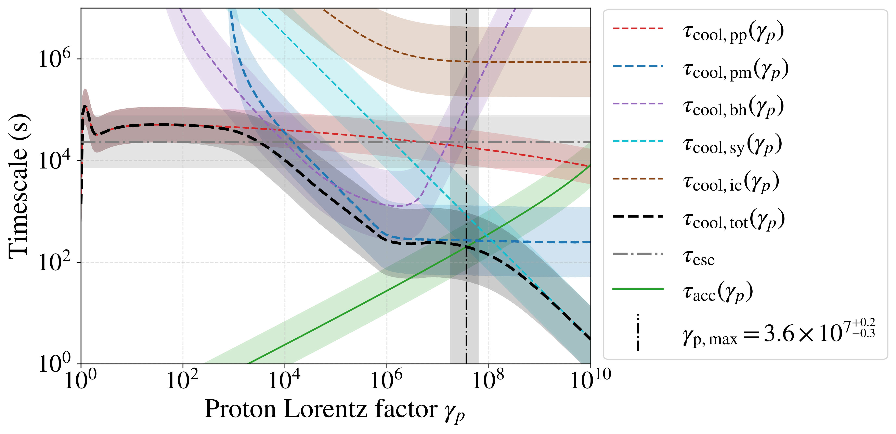
图注：Phase diagram of energy-dependent acceleration and cooling timescales for NGC~1068-like SMBH corona parameters and uncertainties (cf.\ Table~\(\ref{tab:NGC1068_corona}).\) The acceleration curve~$\tau_{\rm acc}(\gamma_p)$ uses the encounter-limited current-sheet acceleration time of Eq.~\(\eqref{eq:tau_acc_enc},\) which averages over the accessible sheet hierarchy for~$dN_{\rm cs}/dL\sim L^{-7/2}$ and includes the mean free path between accessible sheet encounters. The resulting cutoff occurs at~$\gamma_{p,\rm max}m_pc^2\sim {\rm tens}$ of PeV. The escape timescale~$\tau_{\rm esc}$ (gray dash-dot) is comparable to cooling only near the low-energy edge and exceeds the aggregate cooling timescale through most of the IceCube-producing range.
对应解读：对应“建议重点查看的图表”第3项和“关键图表逐图导读”图3：加速与冷却时间尺度；也支撑详细解读中“质子可被加速到几十 PeV，直到 pγ 损失主导”的核心结论。
入选理由：这是候选图中最直接检验论文物理可行性的图：横轴为质子能量/洛伦兹因子，比较重联电流片加速时间、逃逸时间和各类冷却时间，并明确给出最高能量落在几十 PeV。它能验证日报中关于加速—冷却交点、IceCube 能段质子能量来源以及 pγ 限制的关键判断，比概念示意图更有诊断价值。
来源与置信度：\(arxiv_source\)；high；\(arxiv_source\) / main.tex:figure[2]
Fig03
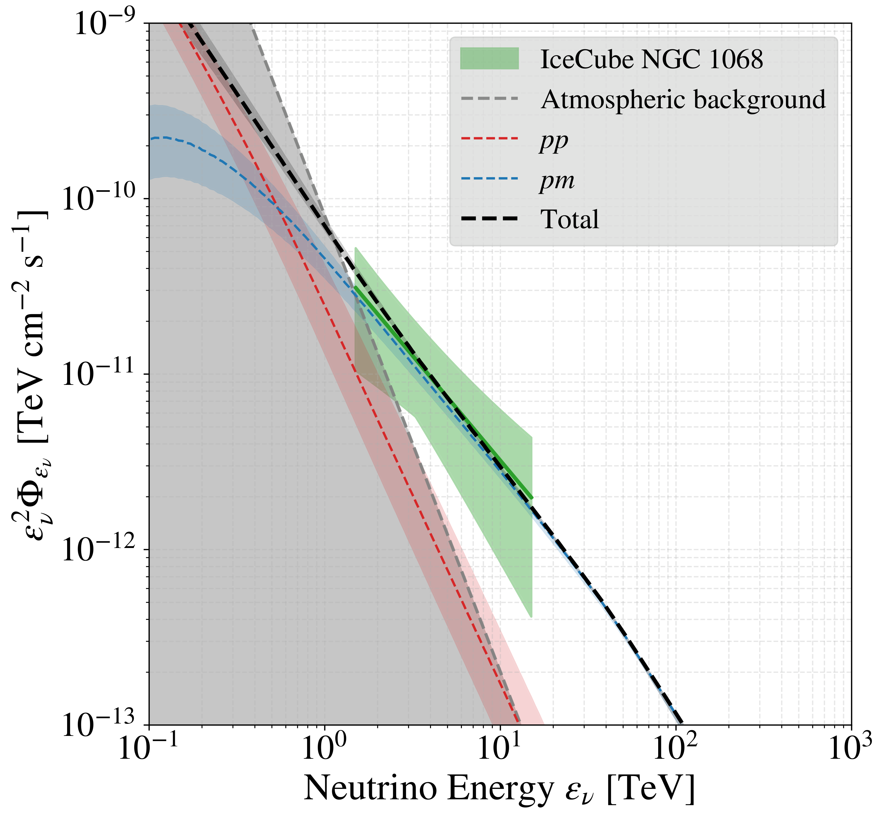
图注：Comparison of our model neutrino SED (dashed black) with the neutrino excess detected by IceCube in the direction of NGC~1068 (green band indicates 95\% confidence). Contributions from~$pp$ (red) and~$pm$ (blue) channels are shown separately. Shaded bands show the variation across the full~$\lambda \in [1,\, \lambda_{\rm max}]$ family (Table~\(\ref{tab:NGC1068_corona}),\) with each~$\lambda$ value normalized to the IceCube flux at the band center. The gray shaded region indicates the atmospheric neutrino background, below which the source signal is indistinguishable from background.
对应解读：对应“建议重点查看的图表”第5项：中微子谱与 IceCube 数据比较；也对应“关键图表逐图导读”图4/图5：质子与中微子谱、与 NGC 1068 观测比较。
入选理由：该图直接把模型中微子 SED 与 IceCube 对 NGC 1068 的95%置信带比较，并分解 pp 与 pγ/pm 通道贡献，还展示参数族 λ 的阴影变化范围。它最能支撑日报中关于 TeV 谱形是否自然匹配、模型归一化和参数族不确定性的讨论，是观测检验层面的核心图。
来源与置信度：\(arxiv_source\)；high；\(arxiv_source\) / main.tex:figure[3]
Fig01

图注：Cartoon of a turbulent black hole corona hosting a neutrino source. Protons are steadily energized by parallel electric fields within the reconnection diffusion regions they encounter intermittently. Inelastic collisions with ambient photons ($p\gamma$) and protons ($pp$) produce charged pions whose decays yield neutrinos, and neutral pions whose decays yield $\gamma$-rays that are absorbed by $\gamma\gamma$ pair production and reprocessed through electromagnetic cascades to lower energies within the optically thick corona.
对应解读：部分对应“详细解读”中关于湍流黑洞日冕、间歇重联电流片、pγ/pp 产生中微子以及 γγ 吸收和电磁级联的物理图像。
入选理由：这是一张机制示意图，没有坐标轴、参数约束或残差，不能检验 σ_p、时间尺度交点或 IceCube 谱形拟合。但它概括了论文设想的隐藏日冕中微子源、多信使产物和 γ 射线吸收过程，可作为读者理解模型框架的辅助图，科学诊断价值低于 Fig02 和 Fig03。
来源与置信度：\(arxiv_source\)；high；\(arxiv_source\) / main.tex:figure[1]
强相关工作
这篇工作与一系列 AGN 日冕中微子模型直接相关。已有模型常假设日冕中存在非热质子，通过 pγ 或 pp 反应解释 NGC 1068；本文的新增点是追问这些质子能否由低 β 强湍流中的磁重联提供，并把 σ_p 与 PIC 模拟结果联系起来。检索关键词可用“NGC 1068 neutrino corona p gamma IceCube magnetic reconnection”。
它也与 blazar 喷流中微子模型形成对照。喷流模型依赖相对论 Doppler boosting 和较透明的辐射区，而日冕隐藏源模型依赖高光子密度和强内部吸收。张力主要来自能量预算、γ 射线上限、星暴区贡献和 IceCube 谱的不确定性。检索关键词可用“hidden cosmic ray accelerators AGN corona neutrinos gamma-ray opacity Seyfert”。
相似工作：
- https://arxiv.org/abs/2211.09972
- https://arxiv.org/abs/2001.04454
- https://arxiv.org/abs/1907.12583
基础理论 / 方法工作：
- https://arxiv.org/abs/astro-ph/9506063
- https://arxiv.org/abs/1809.10836
- https://arxiv.org/abs/1410.4549
相反观点 / 张力线索：
- https://arxiv.org/abs/2211.09972
- https://arxiv.org/abs/2302.05459
3. Discovery of 30 Repeating Fast Radio Burst Sources and Uniform Population Statistics of 80 Repeating Sources from CHIME/FRB
- 来源：arXiv / astro-ph.HE
- 链接：https://arxiv.org/abs/2605.08410v1
- 作者：Amanda M. Cook, Kaitlyn Shin, Ziggy Pleunis, Maxwell Fine, Naman Jain, Derek Bingham, Alice P. Curtin, Gwendolyn Eadie
- 类型：补充推荐（近期/较早未读，非今日每日论文）
- 评分：novelty 8/10，importance 8/10，relevance 9/10，final 9.35/10
- 推荐理由：CHIME/FRB新增30个重复FRB并给出80个重复源的统一统计，包含DM长期变化和重复率人口学结论，是FRB领域的重要观测样本和统计结果。
中文题目：CHIME/FRB 发现 30 个重复快速射电暴源，并给出 80 个重复源的一致总体统计
做了什么：这篇观测统计论文基于 CHIME/FRB 第二批爆发现象，报告 30 个新发现的重复快速射电暴源，并把 CHIME/FRB 已观测到的重复源总数扩大到 80 个。新重复源的超银河色散量覆盖 99.4–1446.0 pc cm^{-3}，按 5 Jy ms 流量阈值归一化后的爆发率约为 10^{-5.7} 到 10^{-0.5} hr^{-1}。作者还在 4 个重复源中发现多年尺度单调近似线性的 DM 变化迹象。全样本中，已观测到重复的 FRB 只占 2.4±0.4%，且该比例随实验时间没有显著演化。关键结论是：CHIME/FRB 数据没有强证据支持“一次性 FRB”和“重复 FRB”在重复率分布上是两个明显分离的族群；尚未重复源的重复率上限完全落在已知重复源的范围内，并且用 James 2023 的总体分析框架时，假设 50–100% FRB 都会重复的幂律重复率分布同样能解释观测。
为什么重要：FRB 是否分为真正一次性和重复两类，是理解其物理起源的核心问题之一。如果所有或大多数 FRB 都重复，只是重复率差异巨大，那么一次性事件不必对应灾变起源；反之若存在真正非重复族群，物理通道可能至少有两类。CHIME 的价值在于它以宽视场、长期、相对统一的选择函数积累了最大重复源样本，使这个问题能从个例比较转向总体统计。
理论 / 观测 / 仪器方法价值：观测价值在于新增 30 个重复源，并给出 80 个重复源的统一爆发率、DM 和重复性统计。方法价值在于把“没有再次看到”也作为重复率上限纳入总体分析，而不是简单把源标记为 one-off。对理论而言，结果削弱了基于当前重复率分布声称两族群明显分离的论证，同时为磁星活动、环境演化和爆发能量函数模型提供更严格的重复率先验。
为什么应该关注：如果你研究 FRB 起源、宿主环境、宇宙学应用或巡天选择效应，这篇文章都值得关注。重复源是精确定位、偏振监测、环境演化和周期性搜索的主要入口；而重复率分布决定了未来望远镜应该采用深度盯源还是广域巡天策略。DM 多年线性变化还提示某些源周围等离子体环境在可观测地演化，这会影响用 FRB 做星际/星系际介质探针的解释。
展开详细解读：文章讲解、背景、理论、重点章节、图表与相关工作
文章详细讲解
科学问题：快速射电暴的重复性直接关系到源的寿命和爆发机制。早期发现中，部分 FRB 只出现一次，部分如 FRB 20121102A 和 FRB 20180916B 明确重复，并表现出复杂活动窗口、偏振和环境特征。一个长期争论是：一次性源是否真的物理上不可重复，还是因为重复率低、观测时间不足和仪器灵敏度限制而尚未再次探测到。
作者怎么做：论文使用 CHIME/FRB 后端在 2018 年 7 月 25 日至 2023 年 9 月 15 日期间探测的第二目录爆发，识别 30 个新重复 FRB 源。作者对每个重复源给出超银河 DM、爆发率，并把爆发率统一缩放到 5 Jy ms 流量阈值以降低不同灵敏度和观测条件带来的不可比性。随后他们把新源与既有 CHIME 重复源合并，形成 80 个重复源样本，其中 79 个由 CHIME/FRB 发现，并统计全 CHIME 源表中已观测重复比例。
关键结果：新重复源覆盖非常宽的 DM 区间，从相对近邻/低柱密度到高 DM 事件都有。重复率跨越约 5 个数量级，说明“重复源”本身不是一个窄活动水平族群。全样本中已观测重复比例为 2.4±0.4%，且随时间没有显著演化；这意味着随着巡天延长，重复源增加与总源数增加大体同步。作者未发现 one-off 与 repeater 的重复率分布有明显双峰；未重复源的重复率上限完全包含在已知重复源重复率范围内。用 James 2023 框架分析时，假设 50–100% 总体会重复也能同样好地拟合观测。
局限和下一步：CHIME 的选择函数复杂，包括天区曝光、波束响应、频率结构、散射展宽、RFI 掩蔽和管线阈值。爆发率还可能随时间非平稳，活动窗口和能量函数会使简单泊松率近似失效。DM 线性变化的显著性也需要长期监测和频率覆盖验证。下一步应结合定位宿主、偏振/RM、活动周期搜索和多望远镜随访，把重复率分布与环境和源年龄联系起来。
背景知识
FRB 是毫秒级射电暂现象，具有超过银河贡献的色散量，通常位于宇宙学距离。其高亮温度要求相干辐射机制，可能与磁星磁层、相对论激波、等离子体透镜或紧凑天体环境有关。重复 FRB 的存在排除了所有 FRB 都由一次性灾变事件产生，但并未排除部分 FRB 来自灾变通道。
CHIME/FRB 是固定式圆柱反射面阵列，工作在约 400–800 MHz，依靠地球自转扫描大天区。它的优势是视场大、巡天时间长、发现率高，非常适合做 FRB 总体统计；劣势是瞬时定位精度有限、频率较低更易受散射和吸收影响，波束响应也会使流量估计和选择函数复杂。
重复率问题曾经常被个例主导：FRB 20121102A 的高活跃性、FRB 20180916B 的周期活动窗口、一些高 RM 重复源的极端环境，容易让人以为重复源是一类特殊对象。但大样本显示重复率跨度很大，且许多 one-off 的观测曝光不足以排除低重复率。因此现在值得用统一巡天数据重估“重复”和“未重复”的统计含义。
常见误区是把“尚未重复”称为“非重复”。严格说，它只是给定曝光和阈值下没有再次探测到，对应一个重复率上限。另一个误区是直接比较不同望远镜发现的重复率，而不校正流量阈值、频率覆盖、观测时长和活动窗口。本文的统一 CHIME 样本正是为减少这些混杂因素。
基础理论 / 方法脉络
FRB 的色散量 DM 是自由电子柱密度积分，导致低频信号相对高频延迟。总 DM 可分解为银河盘、银河晕、星系际介质和宿主/源环境贡献。重复源的 DM 随时间变化可能来自源周围等离子体膨胀、局部环境运动、双星风、超新星遗迹演化或视线穿过宿主介质结构变化。
重复率统计的基本量是给定流量阈值以上的爆发到达率。若爆发独立且平稳，可用泊松过程近似；观测到 k 次爆发的概率由率 R 与有效曝光 \(T_eff\) 决定。但许多 FRB 可能簇发、间歇或有活动窗口，导致泊松模型低估方差。实际分析常需要把能量函数、望远镜灵敏度、波束位置和时间曝光折叠进去。
流量阈值归一化很关键。若一个源的爆发能量或流量分布服从幂律，改变阈值会显著改变观测重复率。因此论文把爆发率缩放到 5 Jy ms 阈值，使不同源和不同观测条件下的率更可比。但这种缩放依赖能量函数斜率或经验假设，仍可能带来系统误差。
总体统计中的核心 degeneracy 是“重复源比例”和“重复率分布”之间的退化。少数高重复率源加大量低重复率源，可以产生与一个包含真正 one-off 族群的模型相似的观测结果。要打破退化，需要更长时间基线、更低阈值、更好定位后的针对性随访，以及对活动窗口非平稳性的建模。
公式与推导
色散延迟由冷等离子体传播给出：
这里 DM 是电子柱密度，\(\nu_1\) 和 \(\nu_2\) 是两个观测频率。重复源的多次爆发可用该关系测量 DM 变化。
DM 的物理定义为
其中 \(n_e\) 是沿视线自由电子数密度，\(D\) 是源到观测者距离。若源局部环境变化，观测到的 \({\rm DM}(t)\) 可在多年尺度近似写为
其中 \(\dot{\rm DM}\) 是线性变化率。论文报告 4 个重复源有这种单调线性变化证据。
若爆发到达服从平稳泊松过程，给定重复率 \(R\) 和有效曝光 \(T_{\rm eff}\)，观测到 \(k\) 次爆发的概率为
对尚未重复的源，若首次发现后随访曝光为 \(T\) 且未再探测到，可得到近似上限
例如 95% 上限满足 \(R_{95}\simeq -\ln(0.05)/T\)。
若爆发流量分布为累积幂律
则从阈值 \(F_{\rm th}\) 缩放到统一阈值 \(F_0\) 的重复率近似为
这里 \(\alpha\) 是累积流量分布斜率。阈值归一化使不同观测条件下的率可比，但 \(\alpha\) 的不确定性会传播到重复率分布。
模型拟合 / 应用方法
这类总体分析需要同时拟合源级重复率和群体级重复率分布。对每个源，数据包括发现爆发数、后续爆发数、有效曝光、流量阈值、波束响应和可能的时间窗。简单模型可假设每个源有固定 R，爆发按泊松过程到达；更复杂模型会加入 Weibull 簇发、活动周期或非平稳率。
群体模型可设重复率服从幂律、对数正态或混合分布，并允许只有一部分 \(f_rep\) 的源会重复。似然由所有源的爆发计数和未重复源的零计数组成；后验中 \(f_rep\) 与低 R 端斜率强退化。本文提到使用 James 2023 框架后，50–100% 源重复的模型与观测同样相容，说明当前数据不能强迫一个大比例真正 one-off 族群。
系统误差主要来自 CHIME 曝光图、波束模型、流量标定、RFI 掩蔽、散射导致的探测效率下降、频谱窄带性和事件聚类算法。残差或诊断图应看：高 DM/强散射源是否系统性低重复率；低曝光源是否主导 one-off 上限；重复率分布是否由少数极活跃源拉动；DM 变化拟合残差是否显示非线性或离群爆发。实际应用中，这些率可用于优化随访策略：高 R 源适合密集偏振和 VLBI 定位，低 R 候选需要长基线宽视场监测。
重点章节 / 结果段落怎么读
-
样本与搜索流程：先看第二目录中如何定义重复源，包括位置一致性、DM 一致性和误关联控制。重复源发现数对聚类标准很敏感。
-
新 30 个重复源性质：重点看 DM 范围、爆发数、流量/fluence、宽度和天空分布。这部分提供后续总体统计的原始基础。
-
爆发率估计：应仔细读作者如何计算有效曝光、流量阈值和缩放到 5 Jy ms。不同阈值修正会显著改变率分布。
-
DM 时间变化：关注 4 个候选线性 DM 变化源的拟合方法、显著性、系统误差和是否可能由频率结构或模板选择造成。
-
重复源比例与总体模型：这是论文最重要的统计结论。读者应看 2.4±0.4% 的定义，以及为什么该比例随时间无显著演化。
-
one-off 与 repeater 是否双峰：重点读与 James 2023 框架相关的分析，尤其是未重复源上限如何与重复源率分布比较。
建议重点查看的图表
-
新重复源天空分布图：看是否受 CHIME 曝光和银河前景影响，避免把仪器选择效应误认为天体分布。
-
DM 分布图：比较新重复源、全部重复源和 one-off 的 DM；重点看高 DM 端是否缺重复源，还是选择效应导致。
-
重复率分布图：看按 5 Jy ms 缩放后的率跨度、误差条和上限；确认 one-off 上限是否确实落入重复源范围。
-
已观测重复比例随时间图：看 2.4% 是否稳定，误差是否随时间收缩，是否存在早期调试或管线变化造成的系统偏差。
-
DM 随时间变化图：对 4 个源分别看 DM 点、线性拟合、残差和置信区间；注意是否由少数爆发决定斜率。
-
群体模型后验图：看重复源比例 \(f_rep\)、重复率分布斜率和归一化的相关性；重点检查 50–100% 重复比例的可信范围。
关键图表逐图导读
图 1：天空分布或样本概览。坐标轴通常为赤经、赤纬或银河坐标，点表示新重复源和既有重复源。主要结论是 CHIME 重复源样本显著扩大。读图陷阱是 CHIME 曝光不均匀，点密度不能直接解释为真实天空各向异性。
图 2：DM 或超银河 DM 分布。横轴为 DM 或 \(DM_excess\)，纵轴为源数。可能用不同颜色区分新重复源、全部重复源和 one-off。重点看 99.4–1446 pc cm^{-3} 的宽范围说明重复源并不限于低 DM。陷阱是高 DM 源更难探测重复，因为散射和低频灵敏度会影响 CHIME。
图 3：重复率分布。横轴可能为 \(\log R\)，纵轴为源数或累积分布；箭头表示未重复源上限。关键结论是 repeater 率分布很宽，one-off 上限被包含其中。读图时要确认所有率是否已缩放到同一 fluence 阈值。
图 4：重复比例随观测时间。横轴为日期或累计时间，纵轴为已观测重复源比例。若曲线在 2.4% 附近稳定，说明没有明显随时间增长的趋势。陷阱是管线升级、曝光累积和新源发现同时发生，简单时间趋势不等于物理比例演化。
图 5：DM 时间演化。横轴为 MJD 或年份，纵轴为最佳 DM。数据点为各次爆发，线为线性拟合，阴影为置信区间。主要看斜率是否显著偏离零，以及残差是否随机。若某源只有少数高信噪爆发，线性趋势可能不稳健。
图 6：群体模型比较或后验。横轴可为重复源比例，纵轴为重复率分布参数或后验概率。关键读法是看 \(f_rep=1\) 是否被排除；本文结论是没有，被 50–100% 重复比例模型良好解释。
论文原图 / 可嵌入图片
Fig02
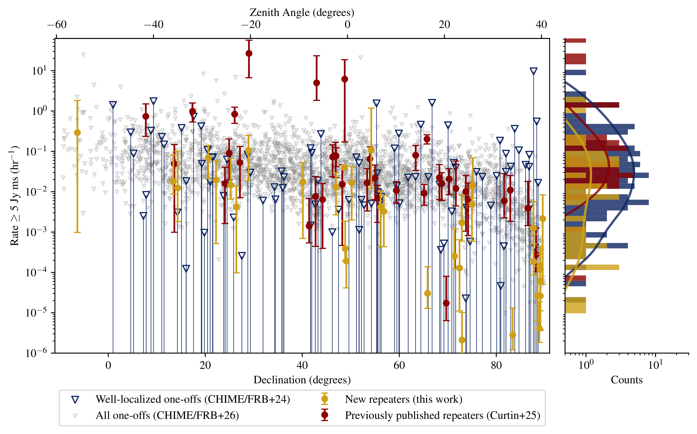
图注：\(\textit{Left panel:}\) Burst rate above 5 Jy ms for repeating FRBs from CHIME/FRB vs. source declination. Previously published repeaters \(\citep{alice,cat2}\) are plotted in red and repeaters newly reported in this work are plotted as gold dots. In both cases, their error bars correspond to 95\% uncertainty regions assuming Poisson statistics in number of detections and the approximately Gaussian uncertainty in the source exposure. The 95\% upper limits implied from as-yet non-repeating, or one-offs, from sources reported in \(\cite{basetcati,cat2}\) are shown with open blue and gray triangles for the full sample and the arcminute-localized sample respectively. The well-localized CHIME/FRB one-offs from \(\cite{basetcati}\) will have smaller upper limit constraints on average, because these estimates are dominated by uncertainty in the exposure, which better localization reduces. For all plotted rate constraints, the total burst rate at a given sensitivity (which varies as a function of declination) has been adjusted to a 5 Jy ms fluence threshold, assuming a $-1.5$ power-law energy index (see \(\S\) \(\ref{sec:rates}\) for more detail). The three highest rate repeaters are FRBs 20200223B, 20201221B, 20191106C. \(\textit{Right panel:}\) Histogram of the 95\% upper limit burst rates above 5 Jy ms for the different populations colored as in the left panel. A Gaussian kernel density estimate (KDE) of the PDF is overlaid for each population; in each case the bandwidth of the KDE was selected using Scott's rule \(\citep\)[equal to the number of data points to the power of -1/5 for 1D data; ][]{scott1992multivariate}. The upper limits implied from the observations of as-yet non-repeating FRBs appear largely consistent with the measured burst rates from repeaters.
对应解读：“建议重点查看的图表”第3项和“关键图表逐图导读”图3：重复率分布、one-off 上限与统一 5 Jy ms 阈值缩放。
入选理由：该图直接展示 CHIME 重复源的爆发率随赤纬分布，以及 one-off 源的95%重复率上限直方图/KDE；图注明确所有率已按 5 Jy ms 阈值统一缩放，并包含误差条和上限箭头，是支撑“one-off 上限落入重复源率范围、未见明显双峰”的核心证据。
来源与置信度：\(arxiv_source\)；high；\(arxiv_source\) / \(main_6_.tex\):figure[2]
Fig08
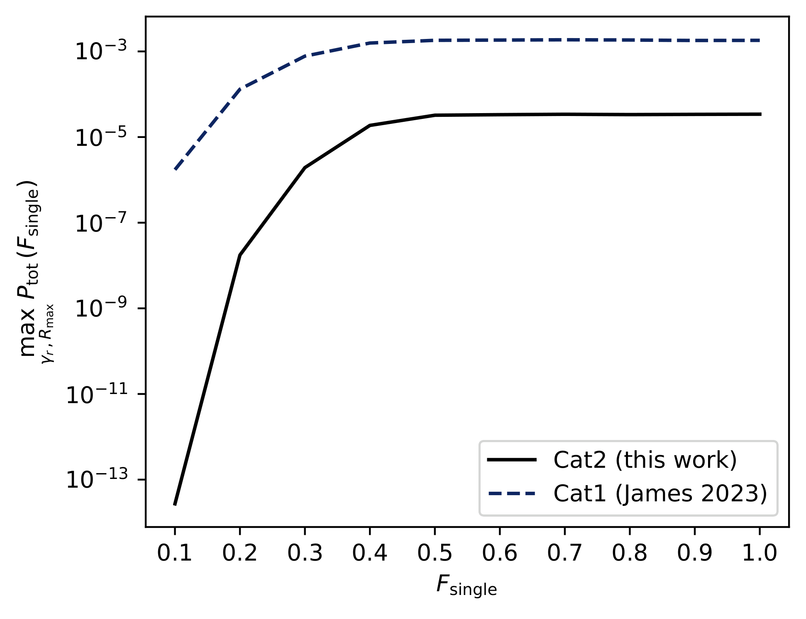
图注：The maximum probability of the J23 repeating population model as a function of the fraction of as-yet one-off FRBs observed by CHIME/FRB that are assumed to be attributable to repeaters, $F_{\text{single}}$. The dotted line shows the original values found when applied to the Cat1 sample by J23. The solid line shows the results for the model fit to Cat2 data. In both cases, fractions between 0.5--1.0 have higher probabilities than lower fractions, suggesting the DM, Declination, and rate distributions of repeaters and one-offs are equally well explained when 50--100\% of our as-yet one-offs are attributable to repeaters, assuming the J23 population model.
对应解读：“建议重点查看的图表”第6项、“关键图表逐图导读”图6和“模型拟合”段落：James 2023 群体模型中重复源比例参数。
入选理由：该图直接给出 J23 重复群体模型的最大概率随 \(F_single\) 变化，并比较 Cat1 与 Cat2；它最能支撑日报中“50–100% 的 as-yet one-off 可归因于重复源也能很好解释观测”的群体模型结论。
来源与置信度：\(arxiv_source\)；high；\(arxiv_source\) / \(main_6_.tex\):figure[8]
Fig06
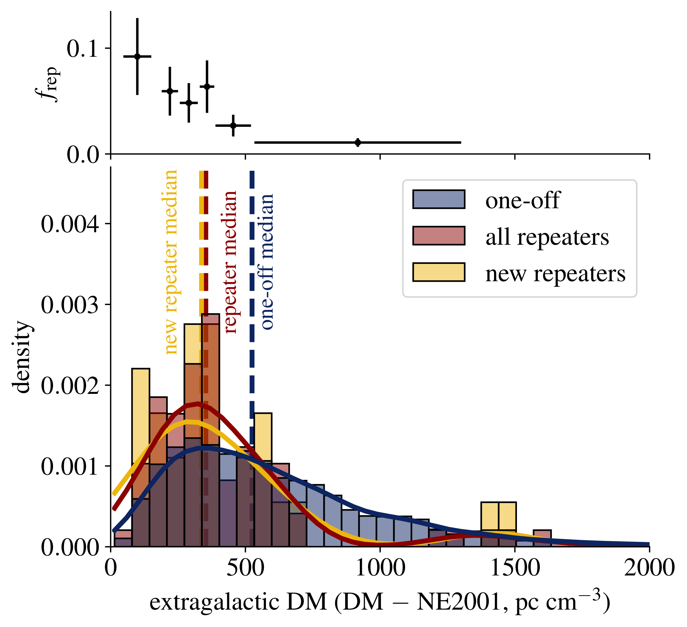
图注：\(\textit{Bottom panel:}\) Extragalactic DM histograms for the apparent one-off population (dark blue histogram), the repeaters newly reported in this work (gold histogram), and all previously published repeaters from CHIME/FRB (red histogram). Extragalactic DMs are reported in the observer's frame. The medians of each sample are shown in dotted vertical lines of their respective colors, to demonstrate consistent distributions between the previous and new repeaters, but discrepancies with the one-off populations. An AD test on the repeaters and one-offs find the distributions inconsistent with being drawn from the same underlying distribution, with estimated $p$-value dmaller than $1\times10^{-5}$. \(\textit{Top panel:}\) $f_{\text{rep}}$, the fraction of FRB sources observed to repeat, in six extragalactic DM bins defined such that there are an equal number of repeating FRB sources in each. This fraction is necessarily a lower limit on the true fraction of repeaters, given that our measured repeater rates would be largely consistent with only detecting one FRB from a source, and given CHIME/FRB is biased against repeater-like burst morphology.
对应解读：“建议重点查看的图表”第2项和“关键图表逐图导读”图2：新重复源、既有重复源与 one-off 的 extragalactic DM 分布及重复比例随 DM 的变化。
入选理由：该图底部是 one-off、新重复源和既有重复源的超银河 DM 直方图及中位数，顶部是不同 DM bin 中观测到的重复比例；它直接对应日报关于 DM 分布、高 DM 端重复源缺失/选择效应以及 repeater 与 one-off DM 分布差异的讨论。
来源与置信度：\(arxiv_source\)；high；\(arxiv_source\) / \(main_6_.tex\):figure[6]
Fig04
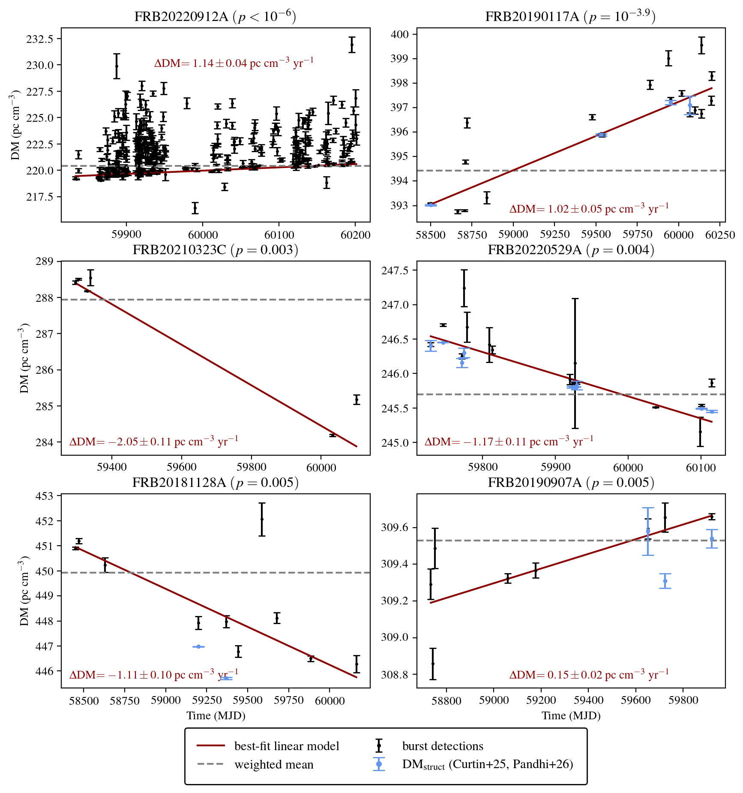
图注：DM versus burst time of arrival for sources (black data points) for which the best-fit linear model (red solid line) is strongly preferred to the best-fit constant model (dashed grey line) and corresponding simulation-based $p$-value is smaller than 0.001 (which is equal to a 50\% family-wise error rate across the sample given our trials factor of 40 searched repeaters) and DM variation is not dominated by a single burst. Sources are ordered by increasing $p$-value or decreasing significance. FRB~20220912A and FRB~20220529A have been explored using higher time resolution data by \(\cite{thomasr117}\) and \(\cite{pandhi26},\) respectively, and in each case, the variation was confirmed to be significant. Each panel is annotated with the best-fit slope in red text. Where previous measurements of the structure maximizing DMs based on higher time-resolution raw-voltage data for these sources have been published, we superimpose those measurements in blue \(\citep{alice, pandhi26}.\)
对应解读：“建议重点查看的图表”第5项和“关键图表逐图导读”图5：4个源的 DM 随时间线性变化。
入选理由：该图展示 DM 随爆发到达时间变化的数据点、最佳线性模型、常数模型对比以及斜率标注，是验证论文声称4个重复源存在显著多年尺度线性 DM 变化的关键诊断图。
来源与置信度：\(arxiv_source\)；high；\(arxiv_source\) / \(main_6_.tex\):figure[4]
Fig07
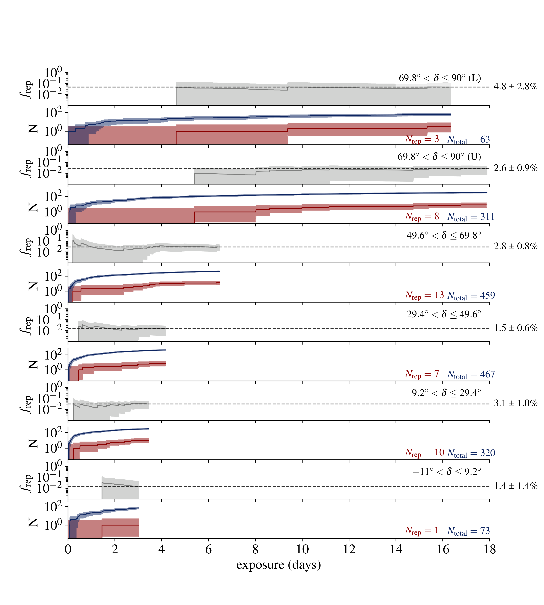
图注：Repeating FRB fraction (number of FRB sources that have been observed to repeat divided by the total number of observed sources) as a function of average total exposure in different declination bins (grey line). Declination bins are indicated in the top right corner, with U/L separating the upper and lower transit of the top bin, respectively. In each pair of panels, the first represents the fraction of FRBs that have repeated, and the second shows the total number of repeaters (red line) and total number of sources (blue line) detected in each bin as a function of exposure in that declination bin. In all cases, the lighter shaded region around the mean estimates of these values represents the 95\% confidence interval, and the reported errors correspond to the 95\% uncertainty ($2 \sigma$ Gaussian equivalent). These fractions are necessarily lower limits of the true repeating fraction of FRBs.
对应解读：“建议重点查看的图表”第4项和“关键图表逐图导读”图4：已观测重复比例随累计曝光变化及置信区间。
入选理由：虽然横轴是不同赤纬 bin 的平均总曝光而非日历时间，但该图给出观测到的重复源比例、重复源数和总源数随曝光累积的演化，并带95%置信区间，最接近日报中用于检查2.4%重复比例稳定性和选择效应的图表需求。
来源与置信度：\(arxiv_source\)；high；\(arxiv_source\) / \(main_6_.tex\):figure[7]
Fig05
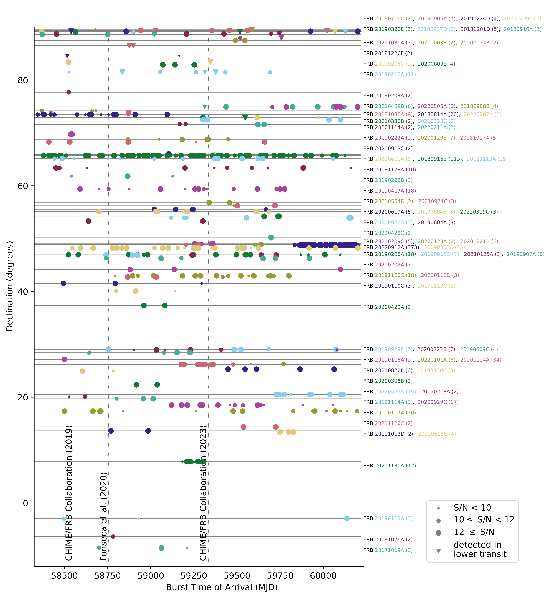
图注：Burst detection time versus declination of all of CHIME/FRB's discovered repeaters. Marker size indicates the S/N of the burst detections. Strong evidence of clustered burst detections, or evidence of enhanced activity, is apparent for many sources, for example FRB~20220912A, FRB~20201124A, and FRB~20201130A (near Decl. $\sim$48, 26, and 8 degrees, respectively). Individual sources are identified with a gray horizontal line at their declination, and listed on the right with their number of observed bursts included parenthetically beside their names. Figure updated from \(\cite{RN3}.\)
对应解读：“建议重点查看的图表”第1项和“关键图表逐图导读”图1的样本概览/天空分布相关内容。
入选理由：候选集中没有真正的赤经-赤纬或银河坐标天空分布图；Fig05展示所有 CHIME/FRB 重复源的爆发探测时间与赤纬，并标注各源及爆发数，可作为样本概览和 CHIME 赤纬曝光/活动聚集的辅助图，但与日报所述完整天空分布的匹配度弱于前几张核心诊断图。
来源与置信度：\(arxiv_source\)；high；\(arxiv_source\) / \(main_6_.tex\):figure[5]
强相关工作
这篇工作直接延续 CHIME/FRB 第一目录、重复源目录以及 FRB 重复率总体统计研究。与早期小样本相比，它的优势是样本数达到 80 个重复源，并且用统一仪器选择函数讨论 one-off 与 repeater 的关系。检索关键词可用“CHIME FRB repeaters population statistics repeat rate one-off James 2023”。
与之相关的理论工作包括磁星重复爆发模型、FRB 能量函数、活动周期和簇发统计。相反观点或张力主要来自两族群解释：一些研究根据宽度、带宽、偏振、宿主环境或能量分布主张重复源与非重复源存在差异；本文则说明至少在重复率分布上，当前 CHIME 数据不要求明显双峰。检索关键词可用“FRB repeaters non-repeaters bimodality energy distribution host environment DM variation”。
相似工作：
- https://arxiv.org/abs/2106.04352
- https://arxiv.org/abs/2301.08762
- https://arxiv.org/abs/2204.09049
基础理论 / 方法工作：
- https://arxiv.org/abs/1211.1022
- https://arxiv.org/abs/1603.00581
- https://arxiv.org/abs/1906.04317
相反观点 / 张力线索：
- https://arxiv.org/abs/2208.00819
- https://arxiv.org/abs/2306.16305